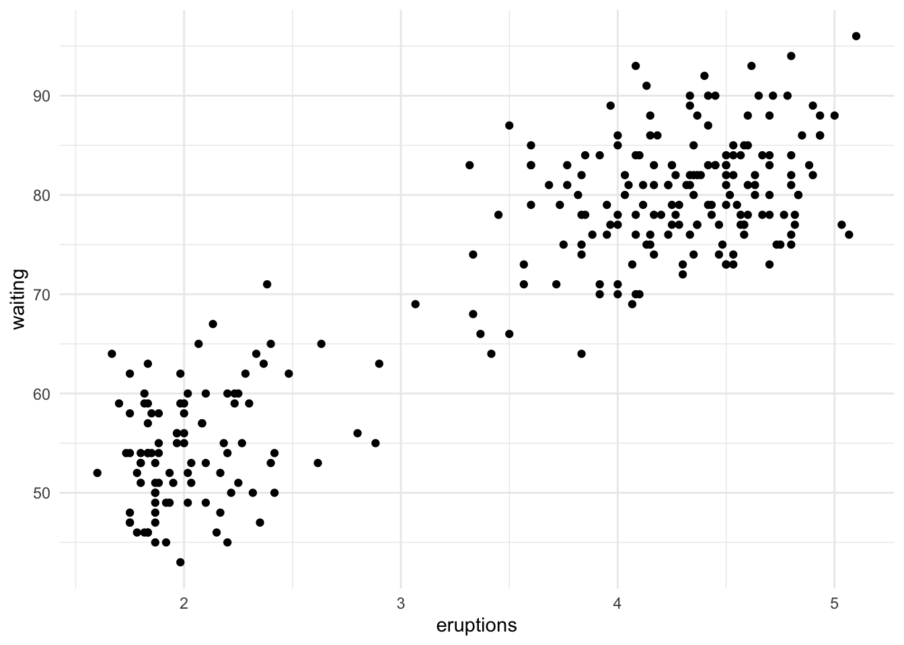
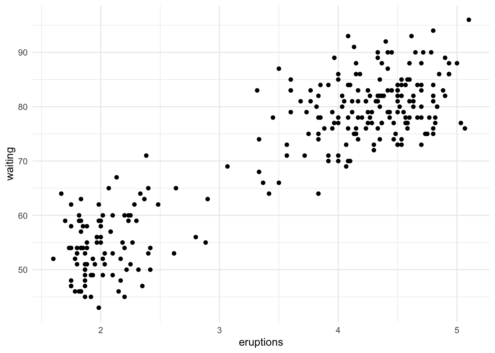
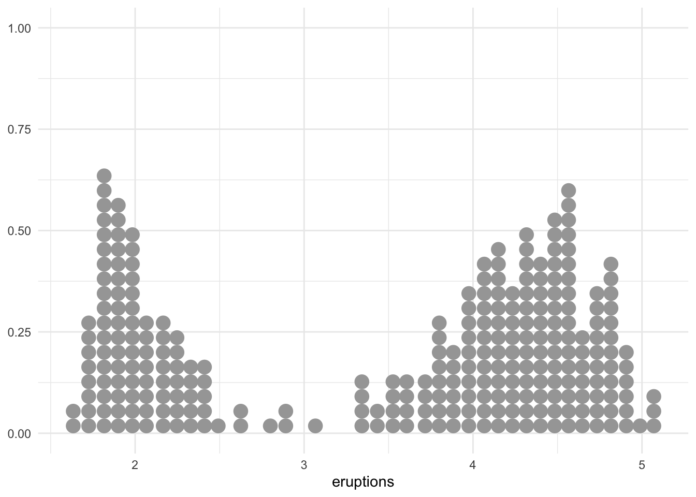

Code
faithful %>%
ggplot(aes(x = eruptions, y = waiting)) +
geom_point()
Here’s a blogpost on fitting a mixturem model using the eruption data of old faithful. Here’s what the dataset looks like:
faithful %>%
ggplot(aes(x = eruptions, y = waiting)) +
geom_point()
Similar to the original blog post, let’s only look at eruptions for now:
faithful %>% ggplot(aes(x = eruptions)) +
geom_dots()
# standardized version
# faithful %>% ggplot(aes(x = scale(eruptions))) +
# geom_dots()The data looks bimodal. We can come up with a simple mixture model:
\[ \begin{align} y_i &\sim \theta \cdot \mathcal{N}(\mu_1, \sigma_1) + (1 - \theta) \cdot \mathcal{N}(\mu_2, \sigma_2) \\ \mu_1, \mu_2 &\sim \mathcal{N}(0, 2), \mu_1 < \mu_2 \\ \sigma_1, \sigma_2 &\sim \mathcal{N}^+(0, 2) \\ \theta &\sim \text{Beta}(5, 5) \end{align} \]
rstanThe following stan code was directly copied from the original blog post.
stan_code <- "
data {
int<lower = 0> N;
vector[N] y;
}
parameters {
ordered[2] mu;
real<lower=0> sigma[2];
real<lower=0, upper=1> theta;
}
model {
sigma ~ normal(0, 2);
mu ~ normal(0, 2);
theta ~ beta(5, 5);
for (n in 1:N)
target += log_mix(theta,
normal_lpdf(y[n] | mu[1], sigma[1]),
normal_lpdf(y[n] | mu[2], sigma[2]));
}
"Now let’s fit the model using rstan:
data <- scale(faithful$eruptions)
# create a list with the data for stan
stan_data <- list(
N = length(data),
y = as.numeric(data)
)
# compile the model
stan_model <- stan_model(model_code = stan_code)Fit the model:
# fit <- sampling(stan_model,
# data = stan_data,
# chains = 4,
# iter = 10000,
# warmup = 5000,
# cores = 4)
# save
# saveRDS(fit, file = "models/stan_faithful.rds")
fit <- readRDS("models/stan_faithful.rds")Check the fit:
print(fit)Inference for Stan model: anon_model.
4 chains, each with iter=10000; warmup=5000; thin=1;
post-warmup draws per chain=5000, total post-warmup draws=20000.
mean se_mean sd 2.5% 25% 50% 75% 97.5% n_eff
mu[1] -1.28 0.00 0.02 -1.33 -1.30 -1.28 -1.27 -1.24 16780
mu[2] 0.69 0.00 0.03 0.63 0.67 0.69 0.71 0.75 25417
sigma[1] 0.21 0.00 0.02 0.18 0.20 0.21 0.23 0.26 18751
sigma[2] 0.38 0.00 0.02 0.34 0.37 0.38 0.40 0.43 20833
theta 0.36 0.00 0.03 0.30 0.34 0.36 0.37 0.41 21381
lp__ -252.39 0.02 1.56 -256.26 -253.20 -252.07 -251.24 -250.33 9680
Rhat
mu[1] 1
mu[2] 1
sigma[1] 1
sigma[2] 1
theta 1
lp__ 1
Samples were drawn using NUTS(diag_e) at Mon Mar 24 13:06:50 2025.
For each parameter, n_eff is a crude measure of effective sample size,
and Rhat is the potential scale reduction factor on split chains (at
convergence, Rhat=1).Let’s plot the estimated on top of existing data:
dnorm1 <- function(x) dnorm(x, mean = -1.28, sd = 0.21)
dnorm2 <- function(x) dnorm(x, mean = 0.69, sd = 0.38)
mixture <- function(x) 0.36 * dnorm(x, mean = -1.28, sd = 0.21) + (1-0.36) * dnorm(x, mean = 0.69, sd = 0.38)
data.frame(x = seq(-2, 2, 0.01)) %>%
ggplot(aes(x)) +
geom_dots(data = faithful, aes(x = scale(eruptions))) +
stat_function(fun = mixture, color = "maroon", linewidth = 1.2) 
brmsFollowing instructions here.
mix <- brms::mixture(gaussian, gaussian)Setting order = 'mu' for mixtures of the same family.formula <- bf(eruptions ~ 1)
# get prior
get_prior(formula = formula, data = faithful, family = mix) prior class coef group resp dpar nlpar lb ub source
student_t(3, 0, 2.5) sigma1 0 default
student_t(3, 0, 2.5) sigma2 0 default
dirichlet(1) theta default
student_t(3, 4, 2.5) Intercept mu1 default
student_t(3, 4, 2.5) Intercept mu2 default# set prior
prior <- c(
prior(normal(0, 2), class = Intercept, dpar = mu1),
prior(normal(0, 2), class = Intercept, dpar = mu2),
# prior(beta(5, 5), class = theta), # dirichlet is the only valid prior for simplex parameters UGH
prior(normal(0, 2), class = sigma1, lb = 0), # truncated normal dist
prior(normal(0, 2), class = sigma2, lb = 0) # truncate normal dist
)Fit the model:
mixture_model <- brm(
formula = formula,
data = faithful,
family = mix,
prior = prior,
chains = 4,
cores = 4,
iter = 10000,
warmup = 5000,
file = "models/brms_mixture"
)Let’s see the fitted model:
summary(mixture_model) Family: mixture(gaussian, gaussian)
Links: mu1 = identity; sigma1 = identity; mu2 = identity; sigma2 = identity; theta1 = identity; theta2 = identity
Formula: eruptions ~ 1
Data: faithful (Number of observations: 272)
Draws: 4 chains, each with iter = 10000; warmup = 5000; thin = 1;
total post-warmup draws = 20000
Regression Coefficients:
Estimate Est.Error l-95% CI u-95% CI Rhat Bulk_ESS Tail_ESS
mu1_Intercept 2.02 0.03 1.97 2.08 1.00 17467 14761
mu2_Intercept 4.27 0.03 4.21 4.34 1.00 26060 17753
Further Distributional Parameters:
Estimate Est.Error l-95% CI u-95% CI Rhat Bulk_ESS Tail_ESS
sigma1 0.24 0.02 0.20 0.30 1.00 18304 15043
sigma2 0.44 0.03 0.39 0.49 1.00 21040 15059
theta1 0.35 0.03 0.30 0.41 1.00 22716 15079
theta2 0.65 0.03 0.59 0.70 1.00 22716 15079
Draws were sampled using sampling(NUTS). For each parameter, Bulk_ESS
and Tail_ESS are effective sample size measures, and Rhat is the potential
scale reduction factor on split chains (at convergence, Rhat = 1).pp_check(mixture_model, ndraws = 100)
The fit seems good.
Let us draw the posterior draws:
dnorm1 <- function(x) dnorm(x, mean = 2.02, sd = 0.24)
dnorm2 <- function(x) dnorm(x, mean = 4.27, sd = 0.44)
mixture <- function(x) 0.35 * dnorm(x, mean = 2.02, sd = 0.24) + (1-0.35) * dnorm(x, mean = 4.27, sd = 0.44)
data.frame(x = seq(1, 6, 0.01)) %>%
ggplot(aes(x)) +
geom_dots(data = faithful, aes(x = eruptions)) +
stat_function(fun = mixture, color = "maroon", linewidth = 1.2) 
make_stancode(formula = formula,
data = faithful,
family = mix,
prior = prior)// generated with brms 2.22.0
functions {
}
data {
int<lower=1> N; // total number of observations
vector[N] Y; // response variable
vector[2] con_theta; // prior concentration
int prior_only; // should the likelihood be ignored?
}
transformed data {
}
parameters {
real<lower=0> sigma1; // dispersion parameter
real<lower=0> sigma2; // dispersion parameter
simplex[2] theta; // mixing proportions
ordered[2] ordered_Intercept; // to identify mixtures
}
transformed parameters {
// identify mixtures via ordering of the intercepts
real Intercept_mu1 = ordered_Intercept[1];
// identify mixtures via ordering of the intercepts
real Intercept_mu2 = ordered_Intercept[2];
// mixing proportions
real<lower=0,upper=1> theta1;
real<lower=0,upper=1> theta2;
real lprior = 0; // prior contributions to the log posterior
theta1 = theta[1];
theta2 = theta[2];
lprior += normal_lpdf(Intercept_mu1 | 0, 2);
lprior += normal_lpdf(sigma1 | 0, 2)
- 1 * normal_lccdf(0 | 0, 2);
lprior += normal_lpdf(Intercept_mu2 | 0, 2);
lprior += normal_lpdf(sigma2 | 0, 2)
- 1 * normal_lccdf(0 | 0, 2);
lprior += dirichlet_lpdf(theta | con_theta);
}
model {
// likelihood including constants
if (!prior_only) {
// initialize linear predictor term
vector[N] mu1 = rep_vector(0.0, N);
// initialize linear predictor term
vector[N] mu2 = rep_vector(0.0, N);
mu1 += Intercept_mu1;
mu2 += Intercept_mu2;
// likelihood of the mixture model
for (n in 1:N) {
array[2] real ps;
ps[1] = log(theta1) + normal_lpdf(Y[n] | mu1[n], sigma1);
ps[2] = log(theta2) + normal_lpdf(Y[n] | mu2[n], sigma2);
target += log_sum_exp(ps);
}
}
// priors including constants
target += lprior;
}
generated quantities {
// actual population-level intercept
real b_mu1_Intercept = Intercept_mu1;
// actual population-level intercept
real b_mu2_Intercept = Intercept_mu2;
}